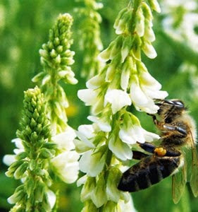
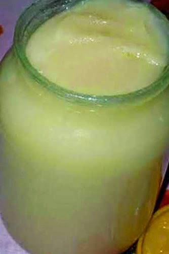

 Продовжуючи тему медоносів, не можу не розповісти про таку чудову медоносну культуру, як буркун. У одній з попередніх статей на цю тему я із захватом відзивався про фацелію, однорічний рослину-медонос, родом з Каліфорнії. Насіння ж білого буркуну, придбане мною випадково в одному з магазинів, довгий час лежало в очікуванні своєї години. І ось цей час прийшов. Минулою восени з-під фацелії звільнилося невелике поле. Воно акуратно переорало і з жаданням чекало засіву своїй чорній плоті ароматним насінням буркуну. На відміну від фацелії, буркун - рослина дворічне і масово зацвітає лише на другий рік. Засівають буркун навесні з розрахунку 200 гр насіння на сотку. Семена закладають на глибину 1-2 див. Буркун рослина зимостійка і його сміливо можна засівати під зиму, але я це робив в кінці квітня. У перший сезон втечі буркуну невисокі і ледве піднімаються вище за пояс. Зате на другий рік буркун зростає в свою повну силу. І загубитися в його запашних чагарниках нічого не коштує навіть високій людині. Латинська назва буркуну — мелілотус — медова рослина. Розрізняють жовтий буркун і білий. Буркун відноситься до сімейства бобів. Він невимогливий до грунту і є відмінним сидератом. У перший рік його не скошують, а на другий рік зазвичай скошують двічі. Після першого укосу буркун кущиться і квітне ще більше. Аромат квітучого буркуну не сплутаєш ні з чим. Він квітне тривалий період, навіть в посушливу пору року.
Якщо вам раптом повезло і недалеко від вашої пасіки буркуном засіяли велике колгоспне поле або ви прибули на таке поле з кочівлею, то не квапитеся радіти. Річ у тому, що в більшості випадків буркун прибирають на силос в період його масового цвітіння (як інколи і соняшник). При цьому незліченна безліч бджіл, що знаходяться на медозборі, разом із скошеною зеленою масою потрапляє в подрібнювач силосного комбайна і гине. Бджоляру завдається непоправного збитку. Тут дуже важливе сповіщення бджоляру про майбутнє скошування. Пристосування, що відлякують бджіл, застосовуються рідко. Звичайно, можна косити вночі у валяння, а вдень прибирати на сінаж, але власники посівів часто думають по своєму. Напослідку декілька корисних рад, які я перевірив на собі, що бажає культивувати буркун у себе на ділянці. На другий рік після закінчення цвітіння буркуну не квапитеся його скошувати або висмикувати із землі. Зберіть насіння і залиште зимувати в полі. За зиму його довга коренева система подгнієт і весною ви з легкістю повидергиваєте кущі буркуну з грунту. Багато хто думає, що досить засіяти поле буркуном один раз і він зростатиме на цьому полі вічно. Нічого подібного. Після двох років поле заростає травою і вимагає повторної культивації. Точно також немає сенсу кидати насіння буркуну в траву, сподіваючись, що вони проростуть. Буркун, хоча і невибаглива рослина, але все таки потребує підготовки поля.

Залежно від грунтово-кліматичних умов медопродуктівность буркуну від 100 до 600 кг/га. Буркун відмінний медонос
і добре виділяє нектар навіть в засуху. Мед з нього дуже якісний, лікувальний і містить близько 60 лікарських
компонентів. Буркуновий мед відноситься до дорогих елітних сортів. Із-за високого вмісту глюкози (36,78%) він за
кольором білий.Мед з білого буркуну відрізняється сильним ароматом ванілі. Мед з жовтого буркуну володіє тоншим
і ніжнішим ароматом. У народній медицині буркуновий мед з успіхом застосовується при лікуванні:
- захворювань верхніх дихальних доріг(бронхіти, тонзілітти і ін.);
- головних болів і безсоння;
- гіпертонічній хворобі, і особливо добре допомагає при хворобах серця;
- гнійні рани, чирьі добре лікуються зовнішніми компресами на основі поєднання буркунового меду з прополісом;
- при запаленні грудних залоз і суглобів успіх приносить медовий масаж;
- при міозитах приймають теплі ванни з буркуновим медом;